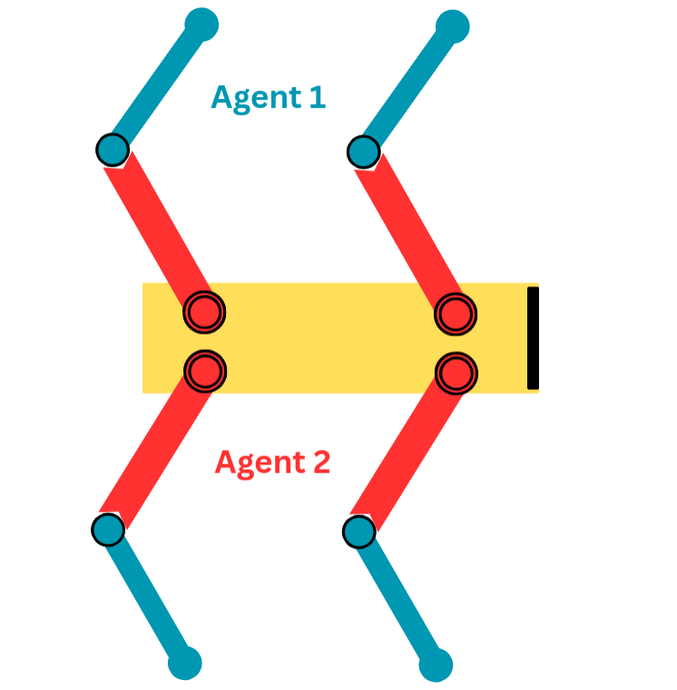
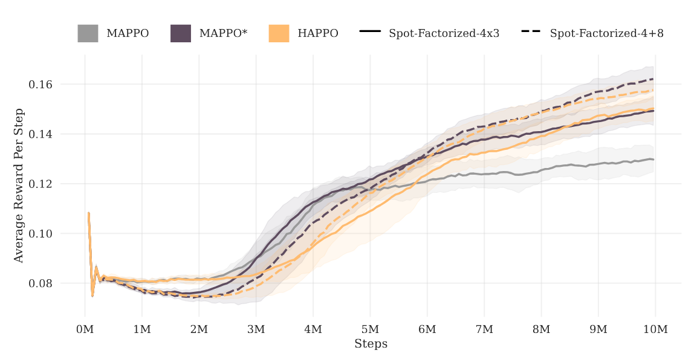
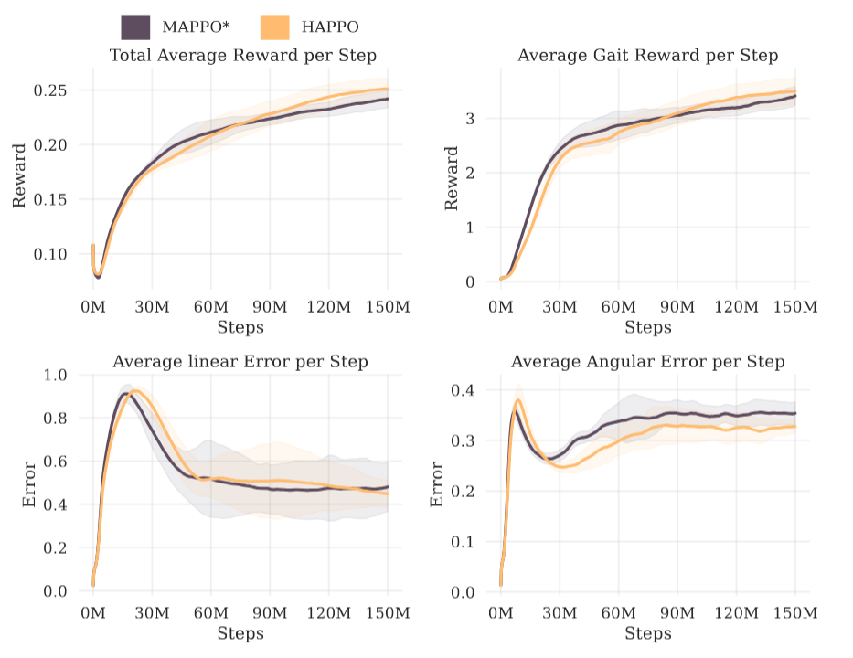

The question
The thesis builds on my IROS 2025 work, which brought heterogeneous-agent RL into NVIDIA Isaac Lab. Here I asked whether that extension pays off in practice: do the theoretical advantages of heterogeneous algorithms show up as better policies inside Isaac Lab, and what do they cost in training speed?
Isaac Lab's built-in multi-agent algorithms, MAPPO and IPPO, update every agent at the same time. Each agent improves against an outdated picture of what its teammates will do, so individually good updates can combine into a worse team. HAPPO updates agents one after another, with each update accounting for the ones before it, which gives a guarantee that the team's joint policy keeps improving.
One robot, many agents
To test this, I made a single robot the team: several agents jointly control one body, so they have to coordinate every step to walk at all. A Spot quadruped's twelve joints were split between cooperating agents in two ways. Each agent can also see its teammates' observations, but with much more noise added.


Results
I compared HAPPO with MAPPO in two forms: with shared parameters (MAPPO), and with a separate network per agent (MAPPO*).

The first result did not match the theory: HAPPO didn't beat MAPPO*. I considered four explanations. HAPPO's extra machinery might only help in niche cases, the tasks might be too simple to tell the algorithms apart, its advantage might only appear with longer training, or MAPPO* might be overfitting the reward. A 150-million-step run on the four-leg task answered all four.

With enough training, HAPPO's sequential updates find a better joint policy, and the difference is visible in the gait: the HAPPO-trained robot lifts its legs higher and moves them in sync, while the MAPPO-trained robot drags its feet and stumbles.
Cost in training speed
Sequential updates add almost no overhead. Throughput stayed within 1% of MAPPO*, and the number of agents affected speed more than the choice of algorithm.
| Algorithm | Task | Steps per second | Time (s) |
|---|---|---|---|
| HAPPO | Spot-Factorized-4+8 | 24,148 | 410 |
| MAPPO* | Spot-Factorized-4+8 | 24,131 | 410 |
| HAPPO | Spot-Factorized-4x3 | 21,607 | 458 |
| MAPPO* | Spot-Factorized-4x3 | 21,817 | 453 |
| MAPPO | Spot-Factorized-4x3 | 24,226 | 408 |
Limitations and next steps
- Isaac Lab released updates during the project, so full integration with the latest version needs some rework.
- The new environments need more reward tuning before their policies could carry over to real robots.
- Natural next steps are graph neural network policies in Isaac Lab and more advanced algorithms built on sequential updates.